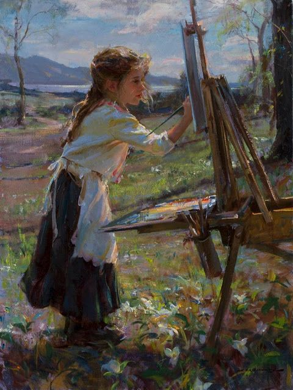
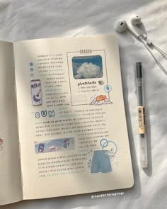
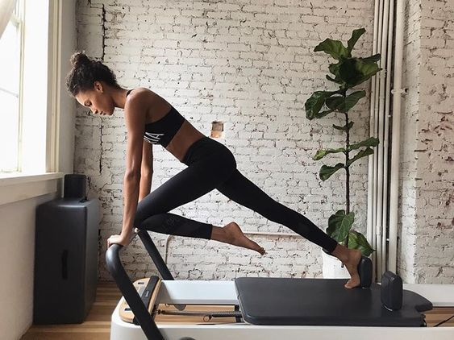
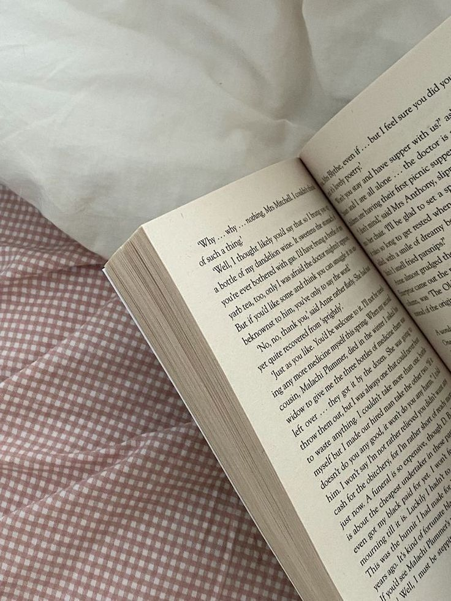

I’ve always found joy in slow-living activities—painting/sketching, updating my journal and monthly planner, going outside, and doing Pilates to improve my well-being and keep me in shape. My passion for drawing can help me create my own income by selling my artwork, and by practicing it every day, I can enhance my skills and become more creative.
  I’m deeply drawn to reading self-development books, writing essays, and studying science and astronomy. My interests free me from boredom and the realities of the world. It's like living in your own imagination, which can also improve your mental health.


Golden Link changed the way I see learning—it’s not just about academics, but about personal growth. Even though our section is chaotic, they still bring us happiness, and we created bonds that will last in our memories. I met new students and made new friends: Monica, Rhian, Martiza, Aeisha, and Jennica. They let my sunshine personality shine through, and they loved it! They're glad I'm able to socialize more. This school year, I'm grateful for everything that happened, whether it was good or bad. As for my academics, I feel it's fair, and I don't worry much about it. What matters most is that I gained confidence, trust, and am proud of myself.